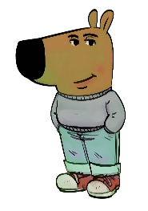

Looking back after finishing, this definitely should not have taken as long as it did. This took me 3 hours primarily due to how terrible I am at writing with a pencil lol.
To start, I'm going to type this as well and send it to you if you want so when you get stuck on my terrible handwriting, you can understand what I'm trying to say.
This definitely seems weird because I hardly ever did this for you when we were ever together. Actually there was like ONE time I did something like this and this is just one of many things I wish I did more of when we were together. I know I frequently try to talk about how good of a boyfriend I was the first time around, but in reality we both know it wasn't totally the truth. We always talked about how people get “bored” of each other and how that would never happen to us, well in reality because of the nature of our relationship, I guess you could say I was “bored?” I don't know because I loved you the whole time I think it just wasn't a good spot for either of us and Im not sure why i'm going on about this because Its in the past and we both used to agree that it was the right thing to do but what i'm trying to say is I wish i did more corny stuff like this the first time around. It costs nothing but time and right now, I could pour my whole heart on to these pages because I love you so much.
There are so many times I wish I made better decisions. I know I'm not the only person who feels like that sometimes and I'm sure you have felt the same way at some point, whether it's about our relationship or not. The biggest regret I have is ending our relationship for the first time. Looking back I know I should’ve worked harder to keep us together but at the time the more immature me didn't see a solution in the future and felt the best thing to do was break up. I don't want to act like our relationship was perfect. We had plenty of problems and we weren't perfect. I certainly was not perfect. But we will never be perfect Ella, so we need to accept what we are and truly make the most out of it. There is no other girl that makes me feel the way you do. There is just no one else I can talk to when I'm hurt or upset or at my lowest. You always listen and actually care. And I don't know if you actually listen to what I say or just pretend like you understand my nonsense but either way, you are the only one who I feel so comfortable sharing everything with.
One huge part of our relationship that I can't thank you enough for is forcing me to go to church. At the time, I was only doing it for you. But once I started going I started to appreciate and understand the message. When we broke up and I was going to Pinecrest, I wasn't just doing it to stay in your parents' good graces, I genuinely did have a passion for it and had a growing faith. I feel like in recent months my faith has slipped and I feel unsure once again and I really am going to start devoting myself to Jesus and I’m going to start going again every sunday. I don’t know where you are in your faith right now but when we are married and have our kids, I think we should find faith together away from anyone's influence so we can truly be happy together. As i'm writing this a song by CAS came on and it lowkey got me SUPER emotional and gave me flashbacks to the concert. I absolutely loved it so much. I hadn't heard many of their songs before but just being with you at a concert like that was such a heartwarming experience. Just knowing you were there with me made such a big difference. Tens of thousands of people were there but in the moment it felt like just you and me.
Ok now i'm going to get to the super emotional page. This one might be longer because I want to make sure you know why I'm doing all this and how much I truly love you. I know this sounds like I'm just desperate (because I kind of am I realize that you literally are my other half and life without you doesn't feel right) but I know next time will be 100% different. I’ve had enough experiences now with drinking, other people, and just life after high school to where I know what I want to do, where I want to be, and who I want to be with. The next time we find ourselves together we will do better and part of that will be me. I will stop being such an immature bitch complaining about stupid stuff. I'm not saying this is the case for everything, but I feel like many of the problems we had were just because of my over exaggerating. I don’t know when you will decide you are ready, but for me I know what I need to do and what I will do to be a better boyfriend and ultimately a better husband and father to our children. From now on i'm going to stop drinking and talking to girls because you are the only girl I want. I probably sound crazy right now and honestly I am but I just need you to understand how in love I am with you. I want us to work again some day and I want to make sure we work forever ella. I attached some cool stuff like this sweet drawing of me at KSU. Wait I forgot to mention, I feel like all of the bad stuff happening between us in athens is a sign for me to not go there so im considering canceling my UGA application just because KSU may be a better fit for a better version of myself. I also attached this cool book I made in 1st grade :)